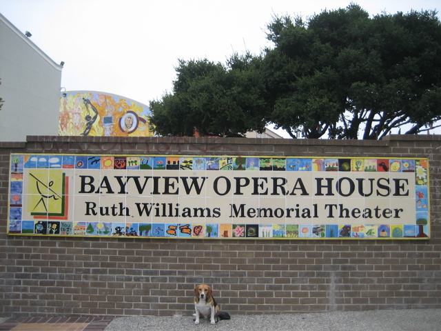

<--Previous
Up
Next-->

Bayview Opera House
The south end of the network of streets closed for San Francisco's Sunday Streets program. Dewey Crumpler's "The Fire Next Time II" is visible behind the wall.